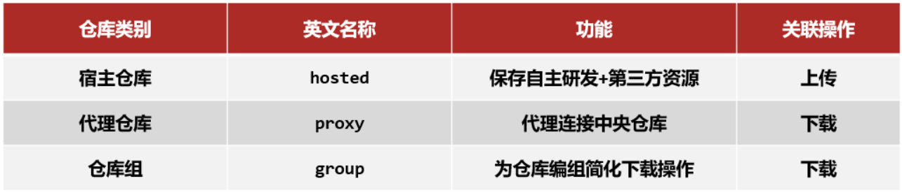

目标
- 理解并实现分模块开发
- 能够使用聚合工程快速构建项目
- 能够使用继承简化项目配置
- 能够根据需求配置生成、开发、测试环境，并在各个环境间切换运行
- 了解 Maven 的私服
Maven 翻译为 "专家"、"内行"，是 Apache 下的一个纯 Java 开发的开源项目。基于项目对象模型（缩写：POM）概念，Maven 利用一个中央信息片断能管理一个项目的构建、报告和文档等步骤。
Maven 是一个项目管理工具，可以对 Java 项目进行构建、依赖管理。
# 分模块开发
# 分模块开发设计
- 按照功能拆分
比如上面的 SSM 整合开发，都是在一个模块中。虽然这样做功能也都实现了，但是也存在了一些问题，拿银行的项目为例
- 网络没有那么发达的时候，需要到银行柜台或者取款机进行业务操作
- 随着互联网的发展，有了电脑以后，就可以在网页上登录银行网站使用 U 盾进行业务操作
- 再来就是随着智能手机的普及，只需要用手机登录 APP 就可以进行业务操作
上面三个场景出现的时间是不相同的，如果非要把三个场景的模块代码放入到一个项目，那么当其中某一个模块代码出现问题，就会导致整个项目无法正常启动，从而导致银行的多个业务都无法正常班理。所以会按照功能将项目进行拆分。
- 按照模块拆分
比如电商的项目中，有订单和商品两个模块，订单中需要包含商品的详细信息，所以需要商品的模型类，商品模块也会用到商品的模型类，这个时候如果两个模块中都写模型类，就会出现重复代码，后期的维护成本就比较高。就想能不能将它们公共的部分抽取成一个独立的模块，其他模块要想使用可以像添加第三方 jar 包依赖一样来使用自己抽取的模块，这样就解决了代码重复的问题，这种拆分方式就说所说的按照模块拆分。
经过两个案例的分析，就知道:
- 将原始模块按照功能拆分成若干个子模块，方便模块间的相互调用，接口共享。
可以将各个层拆成一个个对立的模块，如:
这样的话，项目中的每一层都可以单独维护，也可以很方便的被别人使用，该如何实现呢？
# 分模块开发实现
前面已经完成了 SSM 整合，接下来，就基于 SSM 整合的项目来实现对项目的拆分。
# 环境准备
将之前 ssm 的项目重命名为 maven_01_ssm 部署到 IDEA 中，将环境快速准备好，部署成功后，项目的格式如下:
# 抽取 domain 层
步骤 1: 创建新模块
- 创建一个名为
maven_02_pojo的 maven 项目
步骤 2: 项目中创建 domain 包
- 在
maven_02_pojo中创建com.zy.domain包，并将maven_01_ssm的 Book 类拷贝到该包中
步骤 3: 删除原项目
maven_01_ssm中的 domain 包
- 删除后，
maven_01_ssm项目中用到Book的类中都会有红色提示，如下:
说明 出错的原因是 maven_01_ssm 中已经将 Book 类删除，所以该项目找不到 Book 类，所以报错
- 要想解决上述问题，需要在
maven_01_ssm中添加maven_02_pojo的依赖。
步骤 4: 建立依赖关系
- 在
maven_01_ssm项目的 pom.xml 添加maven_02_pojo的依赖，即maven_02_pojo的pom.xml的配置
<dependency> | |
<groupId>com.zy</groupId> | |
<artifactId>maven_02_pojo</artifactId> | |
<version>1.0-SNAPSHOT</version> | |
</dependency> |
- 因为添加了依赖，所以在
maven_01_ssm中就已经能找到 Book 类，所以刚才的报红提示就会消失。
步骤 5: 编译
maven_01_ssm项目
编译 maven_01_ssm 你会在控制台看到如下错误
错误信息为：不能解决 maven_01_ssm 项目的依赖问题，找不到 maven_02_pojo 这个 jar 包。
为什么找不到呢？
原因是 Maven 会从本地仓库找对应的 jar 包，但是本地仓库又不存在该 jar 包所以会报错。
在 IDEA 中是有 maven_02_pojo 这个项目，所以只需要将 maven_02_pojo 项目安装到本地仓库即可。
步骤 6: 将项目安装本地仓库
将需要被依赖的项目 maven_02_pojo ，使用 maven 的 install 命令，把其安装到 Maven 的本地仓库中。
在 idea 右侧的 maven 中对 maven_02_pojo 的 Lifecyle 的 install 双击，控制台打印 success 且会有路径信息
安装成功后，在对应的路径下就看到安装好的 jar 包
说明 具体安装在哪里，和自己 Maven 的本地仓库配置的位置有关。
当再次执行 maven_01_ssm 的 compile 的命令后，就已经能够成功编译。
# 抽取 Dao 层
步骤 1: 创建新模块
创建一个名称为 maven_03_dao 的 jar 项目

步骤 2: 项目中创建 dao 包
在 maven_03_dao 项目中创建 com.zy.dao 包，并将 maven_01_ssm 中 BookDao 类拷贝到该包中
在 maven_03_dao 中会有如下几个问题需要解决下:
项目
maven_03_dao的 BookDao 接口中 Book 类找不到报错- 解决方案在
maven_03_dao项目的 pom.xml 中添加maven_02_pojo项目<dependencies><dependency><groupId>com.zy</groupId>
<artifactId>maven_02_pojo</artifactId>
<version>1.0-SNAPSHOT</version>
</dependency></dependencies>
- 解决方案在
项目
maven_03_dao的 BookDao 接口中，Mybatis 的增删改查注解报错解决方案在
maven_03_dao项目的 pom.xml 中添加mybatis的相关依赖<dependencies><dependency><groupId>org.mybatis</groupId>
<artifactId>mybatis</artifactId>
<version>3.5.6</version>
</dependency><dependency><groupId>mysql</groupId>
<artifactId>mysql-connector-java</artifactId>
<version>5.1.47</version>
</dependency></dependencies>
- 最后 install 安装到本地
步骤 3: 删除原项目中的 dao 包
删除 Dao 包以后，因为 maven_01_ssm 中的 BookServiceImpl 类中有使用到 Dao 的内容，所以需要在 maven_01_ssm 的 pom.xml 添加 maven_03_dao 的依赖
<dependency> | |
<groupId>com.zy</groupId> | |
<artifactId>maven_03_dao</artifactId> | |
<version>1.0-SNAPSHOT</version> | |
</dependency> |
当再次执行 maven_01_ssm 的 compile 的指令后，就已经能够成功编译。
步骤四：运行测试
- 启动 Tomcat 服务器，访问
http://localhost:8080/pages/books.html - 将抽取后的项目进行运行，测试之前的增删改查功能依然能够使用。
# 总结
将抽取后的项目进行运行，测试之前的增删改查功能依然能够使用。
所以对于项目的拆分，大致会有如下几个步骤:
- 创建 Maven 模块
- 书写模块代码
- 分模块开发需要先针对模块功能进行设计，再进行编码。不会先将工程开发完毕，然后进行拆分。拆分方式可以按照功能拆也可以按照模块拆。
- 通过 maven 指令安装模块到本地仓库 (install 指令)
团队内部开发需要发布模块功能到团队内部可共享的仓库中 (私服)，私服后面会讲解。
# 依赖管理
现在已经能把项目拆分成一个个独立的模块，当在其他项目中想要使用独立出来的这些模块，只需要在其 pom.xml 使用 <dependency> 标签来进行 jar 包的引入即可。
<dependency> 其实就是依赖，关于依赖管理里面都涉及哪些内容，就一个个来学习下:
- 依赖传递
- 可选依赖
- 排除依赖
先来说说什么是依赖:
依赖指当前项目运行所需的 jar，一个项目可以设置多个依赖。
格式为:
<!-- 设置当前项目所依赖的所有 jar--> | |
<dependencies> | |
<!-- 设置具体的依赖 --> | |
<dependency> | |
<!-- 依赖所属群组 id--> | |
<groupId>org.springframework</groupId> | |
<!-- 依赖所属项目 id--> | |
<artifactId>spring-webmvc</artifactId> | |
<!-- 依赖版本号 --> | |
<version>5.2.10.RELEASE</version> | |
</dependency> | |
</dependencies> |
# 依赖传递与冲突问题
回到刚才的项目案例中，打开 Maven 的面板，你会发现:
在项目所依赖的这些 jar 包中，有一个比较大的区别就是有的依赖前面有箭头 > , 有的依赖前面没有。
那么这个箭头所代表的含义是什么？
打开前面的箭头，你会发现这个 jar 包下面还包含有其他的 jar 包
你会发现有两个 maven_02_pojo 的依赖被加载到 Dependencies 中，那么 maven_03_dao 中的 maven_02_pojo 能不能使用呢？
要想验证非常简单，只需要把 maven_01_ssm 项目中 pom.xml 关于 maven_02_pojo 的依赖注释或删除掉
在 Dependencies 中移除自己所添加 maven_02_pojo 依赖后，打开 BookServiceImpl 的类，你会发现 Book 类依然存在，可以被正常使用
这个特性其实就是要讲解的依赖传递。
依赖是具有传递性的:
说明 A 代表自己的项目；B,C,D,E,F,G 代表的是项目所依赖的 jar 包；D1 和 D2 E1 和 E2 代表是相同 jar 包的不同版本
- A 依赖了 B 和 C,B 和 C 有分别依赖了其他 jar 包，所以在 A 项目中就可以使用上面所有 jar 包，这就是所说的依赖传递
- 依赖传递有直接依赖和间接依赖
- 相对于 A 来说，A 直接依赖 B 和 C, 间接依赖了 D1,E1,G，F,D2 和 E2
- 相对于 B 来说，B 直接依赖了 D1 和 E1, 间接依赖了 G
- 直接依赖和间接依赖是一个相对的概念
- 因为有依赖传递的存在，就会导致 jar 包在依赖的过程中出现冲突问题，具体什么是冲突？Maven 是如何解决冲突的？
这里所说的依赖冲突是指项目依赖的某一个 jar 包，有多个不同的版本，因而造成类包版本冲突。
- 情况一在
maven_01_ssm的 pom.xml 中添加两个不同版本的 Junit 依赖:
<dependencies> | |
<dependency> | |
<groupId>junit</groupId> | |
<artifactId>junit</artifactId> | |
<version>4.12</version> | |
<scope>test</scope> | |
</dependency> | |
<dependency> | |
<groupId>junit</groupId> | |
<artifactId>junit</artifactId> | |
<version>4.11</version> | |
<scope>test</scope> | |
</dependency> | |
</dependencies> |
调换位置，刷新 maven 面板，我们会发现，maven 的 dependencies 面板上总是显示使用的是后加载的 jar 包
通过对比，会发现一个结论
- 特殊优先：当同级配置了相同资源的不同版本，后配置的覆盖先配置的。
- 情况二路径优先：当依赖中出现相同的资源时，层级越深，优先级越低，层级越浅，优先级越高
- A 通过 B 间接依赖到 E1
- A 通过 C 间接依赖 D2 再到 E2
- A 就会间接依赖到 E1 和 E2，Maven 会按照层级来选择，E1 是 2 度，E2 是 3 度，所以最终会选择 E1
- 情况三声明优先：当资源在相同层级被依赖时，配置顺序靠前的覆盖配置顺序靠后的
- A 通过 B 间接依赖到 D1
- A 通过 C 间接依赖到 D2
- D1 和 D2 都是两度，这个时候就不能按照层级来选择，需要按照声明来，谁先声明用谁，也就是说 B 在 C 之前声明，这个时候使用的是 D1，反之则为 D2
但是对于上面的结果，我们也不用刻意去记，一切以 maven 的 dependencies 面板上显示的为准
# 可选依赖和排除依赖
依赖传递介绍完以后，来思考一个问题，假如
- maven_01_ssm 依赖了 maven_03_dao
- maven_03_dao 依赖了 maven_02_pojo
- 因为现在有依赖传递，所以 maven_01_ssm 能够使用到 maven_02_pojo 的内容
- 如果说现在不想让 maven_01_ssm 依赖到 maven_02_pojo，有哪些解决方案？
说明 在真实使用的过程中，maven_01_ssm 中是需要用到 maven_02_pojo 的，这里只是用这个例子描述的需求。因为有时候，maven_03_dao 出于某些因素的考虑，就是不想让别人使用自己所依赖的 maven_02_pojo。
- 方案一：可选依赖
- 可选依赖指对外隐藏当前所依赖的资源 --- 不透明
- 在
maven_03_dao的 pom.xml, 在引入maven_02_pojo的时候，添加optional
<dependency> | |
<groupId>com.zy</groupId> | |
<artifactId>maven_02_pojo</artifactId> | |
<version>1.0-SNAPSHOT</version> | |
<!-- 可选依赖是隐藏当前工程所依赖的资源，隐藏后对应资源将不具有依赖传递 --> | |
<optional>true</optional> | |
</dependency> |
此时 BookServiceImpl 就已经报错了，说明由于 maven_03_dao 将 maven_02_pojo 设置成可选依赖，导致 maven_01_ssm 无法引用到 maven_02_pojo 中的内容，导致 Book 类找不到。
- 方案二：排除依赖
exclusions- 排除依赖指主动断开依赖的资源，被排除的资源无需指定版本 --- 不需要
- 前面已经通过可选依赖实现了阻断 maven_02_pojo 的依赖传递，对于排除依赖，则指的是已经有依赖的事实，也就是说 maven_01_ssm 项目中已经通过依赖传递用到了 maven_02_pojo，此时需要做的是将其进行排除，所以接下来需要修改 maven_01_ssm 的 pom.xml
<dependency> | |
<groupId>com.zy</groupId> | |
<artifactId>maven_03_dao</artifactId> | |
<version>1.0-SNAPSHOT</version> | |
<!-- 排除依赖是隐藏当前资源对应的依赖关系 --> | |
<exclusions> | |
<exclusion> | |
<groupId>com.zy</groupId> | |
<artifactId>maven_02_pojo</artifactId> | |
</exclusion> | |
</exclusions> | |
</dependency> |
这样操作后，BookServiceImpl 中的 Book 类一样也会报错。
当然 exclusions 标签带 s 说明是可以依次排除多个依赖到的 jar 包，比如 maven_03_dao 中有依赖 junit 和 mybatis, 也可以一并将其排除。
<dependency> | |
<groupId>com.zy</groupId> | |
<artifactId>maven_03_dao</artifactId> | |
<version>1.0-SNAPSHOT</version> | |
<!-- 排除依赖是隐藏当前资源对应的依赖关系 --> | |
<exclusions> | |
<exclusion> | |
<groupId>com.zy</groupId> | |
<artifactId>maven_02_pojo</artifactId> | |
</exclusion> | |
<exclusion> | |
<groupId>log4j</groupId> | |
<artifactId>log4j</artifactId> | |
</exclusion> | |
<exclusion> | |
<groupId>org.mybatis</groupId> | |
<artifactId>mybatis</artifactId> | |
</exclusion> | |
</exclusions> | |
</dependency> |
介绍我这两种方式后，简单来梳理下，就是
A依赖B,B依赖C,C通过依赖传递会被A使用到，现在要想办法让A不去依赖C- 可选依赖是在 B 上设置
<optional>,A不知道有C的存在， - 排除依赖是在 A 上设置
<exclusions>,A知道有C的存在，主动将其排除掉。
# 聚合和继承
项目已经从以前的单模块，变成了现在的多模块开发。项目一旦变成了多模块开发以后，就会引发一些问题，在这一节中主要会学习两个内容 聚合 和 继承 ，用这两个知识来解决下分模块后的一些问题。
# 聚合

- 分模块开发后，需要将这四个项目都安装到本地仓库，目前只能通过项目 Maven 面板的
install来安装，并且需要安装四个，如果的项目足够多，那么一个个安装起来还是比较麻烦的 - 如果四个项目都已经安装成功，当 ssm_pojo 发生变化后，就得将 ssm_pojo 重新安装到 maven 仓库，但是为了确保对 ssm_pojo 的修改不会影响到其他项目模块，需要对所有的模块进行重新编译，那又需要将所有的模块再来一遍
项目少的话还好，但是如果项目多的话，一个个操作项目就容易出现漏掉或重复操作的问题，所以就想能不能抽取一个项目，把所有的项目管理起来，以后要想操作这些项目，只需要操作这一个项目，其他所有的项目都走一样的流程，这个不就很省事省力。
这就用到了接下来要讲解的聚合：
- 所谓聚合：将多个模块组织成一个整体，同时进行项目构建的过程称为聚合
- 聚合工程：通常是一个不具有业务功能的 "空" 工程（有且仅有一个 pom 文件）
- 作用：使用聚合工程可以将多个工程编组，通过对聚合工程进行构建，实现对所包含的模块进行同步构建
- 当工程中某个模块发生更新（变更）时，必须保障工程中与已更新模块关联的模块同步更新，此时可以使用聚合工程来解决批量模块同步构建的问题。
具体的实现步骤为：
步骤 1: 创建一个空的 maven 项目
步骤 2: 将项目的打包方式改为 pom，通过
packaging
<?xml version="1.0" encoding="UTF-8"?> | |
<project xmlns="http://maven.apache.org/POM/4.0.0" | |
xmlns:xsi="http://www.w3.org/2001/XMLSchema-instance" | |
xsi:schemaLocation="http://maven.apache.org/POM/4.0.0 http://maven.apache.org/xsd/maven-4.0.0.xsd"> | |
<modelVersion>4.0.0</modelVersion> | |
<groupId>com.zy</groupId> | |
<artifactId>maven_01_parent</artifactId> | |
<version>1.0-RELEASE</version> | |
<packaging>pom</packaging> | |
</project> |
说明 项目的打包方式，接触到的有三种，分别是
- jar：默认情况，说明该项目为 java 项目
- war：说明该项目为 web 项目
- pom：说明该项目为聚合或继承 (后面会讲) 项目
步骤 3:pom.xml 添加所要管理的项目
<?xml version="1.0" encoding="UTF-8"?> | |
<project xmlns="http://maven.apache.org/POM/4.0.0" | |
xmlns:xsi="http://www.w3.org/2001/XMLSchema-instance" | |
xsi:schemaLocation="http://maven.apache.org/POM/4.0.0 http://maven.apache.org/xsd/maven-4.0.0.xsd"> | |
<modelVersion>4.0.0</modelVersion> | |
<groupId>com.zy</groupId> | |
<artifactId>maven_01_parent</artifactId> | |
<version>1.0-RELEASE</version> | |
<packaging>pom</packaging> | |
<!-- 设置管理的模块名称 --> | |
<modules> | |
<module>../maven_01_ssm</module> | |
<module>../maven_02_pojo</module> | |
<module>../maven_03_dao</module> | |
</modules> | |
</project> |
步骤 4: 使用聚合统一管理项目
测试发现，当 maven 面板的 compile 被点击后，所有被其管理的项目都会被执行编译操作。这就是聚合工程的作用。
说明 聚合工程管理的项目在进行运行的时候，会按照项目与项目之间的依赖关系来自动决定执行的顺序和配置的顺序无关。虽然我们配置的顺序是 123 ，但是执行的时候按照依赖关系编译是 231
聚合的知识就讲解完了，最后总结一句话就是，聚合工程主要是用来管理项目。
# 继承
已经完成了使用聚合工程去管理项目，聚合工程进行某一个构建操作，其他被其管理的项目也会执行相同的构建操作。那么接下来，再来分析下，多模块开发存在的另外一个问题， 重复配置 的问题，先来看张图:

spring-webmvc、spring-jdbc在三个项目模块中都有出现，这样就出现了重复的内容spring-test只在 ssm_crm 和 ssm_goods 中出现，而在 ssm_order 中没有，这里是部分重复的内容- 使用的 spring 版本目前是
5.2.10.RELEASE, 假如后期要想升级 spring 版本，所有跟 Spring 相关 jar 包都得被修改，涉及到的项目越多，维护成本越高
面对上面的这些问题，就得用到接下来要学习的继承
- 所谓继承：描述的是两个工程间的关系，与 java 中的继承相似，子工程可以继承父工程中的配置信息，常见于依赖关系的继承。
- 作用：
- 简化配置
- 减少版本冲突
到程序中去看看继承该如何实现：
步骤 1: 创建一个空的 Maven 项目并将其打包方式设置为 pom
因为这一步和前面 maven 创建聚合工程的方式是一摸一样，所以可以单独创建一个新的工程，也可以直接和聚合公用一个工程。实际开发中，聚合和继承一般也都放在同一个项目中，但是这两个的功能是不一样的
<?xml version="1.0" encoding="UTF-8"?> | |
<project xmlns="http://maven.apache.org/POM/4.0.0" | |
xmlns:xsi="http://www.w3.org/2001/XMLSchema-instance" | |
xsi:schemaLocation="http://maven.apache.org/POM/4.0.0 http://maven.apache.org/xsd/maven-4.0.0.xsd"> | |
<modelVersion>4.0.0</modelVersion> | |
<groupId>com.zy</groupId> | |
<artifactId>maven_01_parent</artifactId> | |
<version>1.0-SNAPSHOT</version> | |
<!-- 设置打包方式 --> | |
<packaging>pom</packaging> | |
</project> |
步骤 2: 在子项目中设置其父工程
分别在 maven_01_ssm , maven_02_pojo , maven_03_dao 的 pom.xml 中添加其父项目为 maven_01_parent
<!-- 配置当前工程继承自 parent 工程 --> | |
<parent> | |
<groupId>com.zy</groupId> | |
<artifactId>maven_01_parent</artifactId> | |
<version>1.0-RELEASE</version> | |
<!-- 设置父项目 pom.xml 位置路径 --> | |
<relativePath>../maven_01_parent/pom.xml</relativePath> | |
</parent> |
步骤 3: 优化子项目共有依赖导入问题
- 将子项目共同使用的 jar 包都抽取出来，维护在父项目的 pom.xml 中
<?xml version="1.0" encoding="UTF-8"?> | |
<project xmlns="http://maven.apache.org/POM/4.0.0" | |
xmlns:xsi="http://www.w3.org/2001/XMLSchema-instance" | |
xsi:schemaLocation="http://maven.apache.org/POM/4.0.0 http://maven.apache.org/xsd/maven-4.0.0.xsd"> | |
<modelVersion>4.0.0</modelVersion> | |
<groupId>com.zy</groupId> | |
<artifactId>maven_01_parent</artifactId> | |
<version>1.0-RELEASE</version> | |
<packaging>pom</packaging> | |
<!-- 设置管理的模块名称 --> | |
<modules> | |
<module>../maven_01_ssm</module> | |
<module>../maven_02_pojo</module> | |
<module>../maven_03_dao</module> | |
</modules> | |
<dependencies> | |
<dependency> | |
<groupId>org.springframework</groupId> | |
<artifactId>spring-core</artifactId> | |
<version>5.2.10.RELEASE</version> | |
</dependency> | |
<dependency> | |
<groupId>org.springframework</groupId> | |
<artifactId>spring-webmvc</artifactId> | |
<version>5.2.10.RELEASE</version> | |
</dependency> | |
<dependency> | |
<groupId>org.springframework</groupId> | |
<artifactId>spring-jdbc</artifactId> | |
<version>5.2.10.RELEASE</version> | |
</dependency> | |
<dependency> | |
<groupId>org.springframework</groupId> | |
<artifactId>spring-test</artifactId> | |
<version>5.2.10.RELEASE</version> | |
</dependency> | |
<dependency> | |
<groupId>org.mybatis</groupId> | |
<artifactId>mybatis</artifactId> | |
<version>3.5.6</version> | |
</dependency> | |
<dependency> | |
<groupId>org.mybatis</groupId> | |
<artifactId>mybatis-spring</artifactId> | |
<version>1.3.0</version> | |
</dependency> | |
<dependency> | |
<groupId>mysql</groupId> | |
<artifactId>mysql-connector-java</artifactId> | |
<version>5.1.47</version> | |
</dependency> | |
<dependency> | |
<groupId>com.alibaba</groupId> | |
<artifactId>druid</artifactId> | |
<version>1.1.16</version> | |
</dependency> | |
<dependency> | |
<groupId>javax.servlet</groupId> | |
<artifactId>javax.servlet-api</artifactId> | |
<version>3.1.0</version> | |
<scope>provided</scope> | |
</dependency> | |
<dependency> | |
<groupId>com.fasterxml.jackson.core</groupId> | |
<artifactId>jackson-databind</artifactId> | |
<version>2.9.0</version> | |
</dependency> | |
</dependencies> | |
</project> |
删除子项目中已经被抽取到父项目的 pom.xml 中的 jar 包，如在
maven_01_ssm的 pom.xml 中将已经出现在父项目的 jar 包删除掉- 删除完后，你会发现父项目中有依赖对应的 jar 包，子项目虽然已经将重复的依赖删除掉了，但是刷新的时候，子项目中所需要的 jar 包依然存在。
- 当项目的
<parent>标签被移除掉，会发现多出来的 jar 包依赖也会随之消失。
在父项目中修改 jar 包的版本，刷新后，子项目中的 jar 包版本也随之变化
- 这样就可以解决刚才提到的第一个问题，将子项目中的公共 jar 包抽取到父工程中进行统一添加依赖，这样做的可以简化配置，并且当父工程中所依赖的 jar 包版本发生变化，所有子项目中对应的 jar 包版本也会跟着更新。
步骤 4: 优化子项目依赖版本问题
如果把所有用到的 jar 包都管理在父项目的 pom.xml，看上去更简单些，但是这样就会导致有很多项目引入了过多自己不需要的 jar 包。如上面看到的这张图:
如果把所有的依赖都放在了父工程中进行统一维护，就会导致 ssm_order 项目中多引入了 spring-test 的 jar 包，如果这样的 jar 包过多的话，对于 ssm_order 来说也是一种 "负担"。
那针对于这种部分项目有的 jar 包，该如何管理优化呢？
- 在父工程 mavne_01_parent 的 pom.xml 来定义依赖管理
<!-- 定义依赖管理 --> | |
<dependencyManagement> | |
<dependencies> | |
<dependency> | |
<groupId>junit</groupId> | |
<artifactId>junit</artifactId> | |
<version>4.12</version> | |
<scope>test</scope> | |
</dependency> | |
</dependencies> | |
</dependencyManagement> |
将 maven_01_ssm 的 pom.xml 中的 junit 依赖删除掉，刷新 Maven
刷新完会发现，在 maven_01_ssm 项目中的 junit 依赖并没有出现，所以得到一个结论:
<dependencyManagement>标签不真正引入 jar 包，而是配置可供子项目选择的 jar 包依赖
子项目要想使用它所提供的这些 jar 包，需要自己添加依赖，并且不需要指定<version>在 maven_01_ssm 的 pom.xml 添加 junit 的依赖
<dependency> | |
<groupId>junit</groupId> | |
<artifactId>junit</artifactId> | |
<scope>test</scope> | |
</dependency> |
注意 这里就不需要添加版本了，这样做的好处就是当父工程 dependencyManagement 标签中的版本发生变化后，子项目中的依赖版本也会跟着发生变化
- 在 maven_03_dao 的 pom.xml 添加 junit 的依赖
<dependency> | |
<groupId>junit</groupId> | |
<artifactId>junit</artifactId> | |
<scope>test</scope> | |
</dependency> |
这个时候，maven_01_ssm 和 maven_03_dao 这两个项目中的 junit 版本就会跟随着父项目中的标签 dependencyManagement 中 junit 的版本发生变化而变化。不需要 junit 的项目就不需要添加对应的依赖即可。
至此继承就已经学习完了，总结来说，继承可以帮助做两件事
- 将所有项目公共的 jar 包依赖提取到父工程的 pom.xml 中，子项目就可以不用重复编写，简化开发
- 将所有项目的 jar 包配置到父工程的 dependencyManagement 标签下，实现版本管理，方便维护
- dependencyManagement 标签不真正引入 jar 包，只是管理 jar 包的版本
- 子项目在引入的时候，只需要指定 groupId 和 artifactId，不需要加 version
- 当 dependencyManagement 标签中 jar 包版本发生变化，所有子项目中有用到该 jar 包的地方对应的版本会自动随之更新
最后总结一句话就是，父工程主要是用来快速配置依赖 jar 包和管理项目中所使用的资源。
# 小结
继承的实现步骤:
创建 Maven 模块，设置打包类型为 pom
<packaging>pom</packaging>
在父工程的 pom 文件中配置依赖关系 (子工程将沿用父工程中的依赖关系), 一般只抽取子项目中公有的 jar 包
<dependencies><dependency><groupId>org.springframework</groupId>
<artifactId>spring-webmvc</artifactId>
<version>5.2.10.RELEASE</version>
</dependency>...
</dependencies>在父工程中配置子工程中可选的依赖关系
<dependencyManagement><dependencies><dependency><groupId>com.alibaba</groupId>
<artifactId>druid</artifactId>
<version>1.1.16</version>
</dependency></dependencies>...
</dependencyManagement>在子工程中配置当前工程所继承的父工程
<!-- 定义该工程的父工程 --><parent><groupId>com.zy</groupId>
<artifactId>maven_01_parent</artifactId>
<version>1.0-RELEASE</version>
<!-- 填写父工程的 pom 文件，可以不写 --><relativePath>../maven_01_parent/pom.xml</relativePath>
</parent>在子工程中配置使用父工程中可选依赖的坐标
<dependencies><dependency><groupId>com.alibaba</groupId>
<artifactId>druid</artifactId>
</dependency></dependencies>
注意事项
- 子工程中使用父工程中的可选依赖时，仅需要提供群组 id 和项目 id，无需提供版本，版本由父工程统一提供，避免版本冲突
- 子工程中还可以定义父工程中没有定义的依赖关系，只不过不能被父工程进行版本统一管理。
# 聚合与继承的区别
聚合和继承的作用:
- 聚合用于快速构建项目，对项目进行管理
- 继承用于快速配置和管理子项目中所使用 jar 包的版本
聚合和继承的相同点:
- 聚合与继承的 pom.xml 文件打包方式均为 pom，可以将两种关系制作到同一个 pom 文件中
- 聚合与继承均属于设计型模块，并无实际的模块内容
聚合和继承的不同点:
- 聚合是在当前模块中配置关系，聚合可以感知到参与聚合的模块有哪些
- 继承是在子模块中配置关系，父模块无法感知哪些子模块继承了自己
# IDEA 构建聚合与继承工程
但是有一个稍微麻烦的地方就是聚合和继承的工程构建，需要在聚合项目中手动添加 modules 标签，需要在所有的子项目中添加 parent 标签，万一写错了咋办？
其实对于聚合和继承工程的创建，IDEA 已经能帮助快速构建，具体的实现步骤为:
步骤 1: 创建一个 Maven 项目
创建一个空的 Maven 项目，可以将项目中的 src 目录删除掉，这个项目作为聚合工程和父工程。

步骤 2: 创建子项目
该项目可以被聚合工程管理，同时会继承父工程。
创建成功后，maven_parent 即是聚合工程又是父工程，maven_web 中也有 parent 标签，继承的就是 maven_parent, 对于难以配置的内容都自动生成
按照上面这种方式，就可以根据自己的需要来构建分模块项目
# 属性
在这一章节内容中，将学习两个内容，分别是
- 属性
- 版本管理
属性中会继续解决分模块开发项目存在的问题，版本管理主要是认识下当前主流的版本定义方式。
# 属性
# 问题分析
讲解内容之前，还是先来分析问题:
前面已经在父工程中的 <dependencyManagement> 标签 (配置后里面的包对于子工程就是可选依赖项) 中对项目中所使用的 jar 包版本进行了统一的管理，但是如果在标签中有如下的内容:
<dependency> | |
<groupId>org.springframework</groupId> | |
<artifactId>spring-webmvc</artifactId> | |
<version>5.2.10.RELEASE</version> | |
</dependency> | |
<dependency> | |
<groupId>org.springframework</groupId> | |
<artifactId>spring-jdbc</artifactId> | |
<version>5.2.10.RELEASE</version> | |
</dependency> | |
<dependency> | |
<groupId>org.springframework</groupId> | |
<artifactId>spring-test</artifactId> | |
<version>5.2.10.RELEASE</version> | |
</dependency> | |
<dependency> | |
<groupId>org.mybatis</groupId> | |
<artifactId>mybatis</artifactId> | |
<version>3.5.6</version> | |
</dependency> |
你会发现，如果现在想更新 Spring 的版本，你会发现依然需要更新多个 jar 包的版本，这样的话还是有可能出现漏改导致程序出问题，而且改起来也是比较麻烦。
问题清楚后，需要解决的话，就可以参考 java 基础所学习的变量，声明一个变量，在其他地方使用该变量，当变量的值发生变化后，所有使用变量的地方，就会跟着修改，即:
# 解决步骤
步骤 1: 父工程中定义属性
<properties> | |
<spring.version>5.2.10.RELEASE</spring.version> | |
<junit.version>4.12</junit.version> | |
<mybatis-spring.version>1.3.0</mybatis-spring.version> | |
</properties> |
步骤 2: 修改依赖的 version
<dependency> | |
<groupId>org.springframework</groupId> | |
<artifactId>spring-core</artifactId> | |
<version>${spring.version}</version> | |
</dependency> | |
<dependency> | |
<groupId>org.springframework</groupId> | |
<artifactId>spring-webmvc</artifactId> | |
<version>${spring.version}</version> | |
</dependency> | |
<dependency> | |
<groupId>org.springframework</groupId> | |
<artifactId>spring-jdbc</artifactId> | |
<version>${spring.version}</version> | |
</dependency> |
此时，只需要更新父工程中 properties 标签中所维护的 jar 包版本，所有子项目中的版本也就跟着更新。当然除了将 spring 相关版本进行维护，可以将其他的 jar 包版本也进行抽取，这样就可以对项目中所有 jar 包的版本进行统一维护，如:
# 配置文件加载属性
Maven 中的属性已经介绍过了，现在也已经能够通过 Maven 来集中管理 Maven 中依赖 jar 包的版本。但是又有新的需求，就是想让 Maven 对于属性的管理范围能更大些，比如之前项目中的 jdbc.properties ，这个配置文件中的属性，能不能也来让 Maven 进行管理呢？
答案是肯定的，具体的实现步骤为:
步骤 1: 父工程定义属性
<properties> | |
<spring.version>5.2.10.RELEASE</spring.version> | |
<mybatis.version>3.5.6</mybatis.version> | |
<jdbc.driver>com.mysql.jdbc.Driver</jdbc.driver> | |
<jdbc.url>jdbc:mysql://localhost:3306/ssm_db?useSSL=false</jdbc.url> | |
<jdbc.username>root</jdbc.username> | |
<jdbc.password>123456</jdbc.password> | |
</properties> |
步骤 2:jdbc.properties 文件中引用属性
在 jdbc.properties，将 jdbc.url 的值直接获取 Maven 配置的属性
jdbc.driver=${jdbc.driver} | |
jdbc.url=${jdbc.url} | |
jdbc.username=${jdbc.username} | |
jdbc.password=${jdbc.password} |
步骤 3: 设置 maven 过滤文件范围
直接在 properties 中引用属性，看起来怪怪的，properties 怎么能直接用到 maven 中配置的属性呢？
所以我们还需要来配置一下，让 maven_01_ssm/src/main/resources 目录下的 jdbc.properties 文件可以解析 ${}
<build> | |
<resources> | |
<!-- 设置资源目录 --> | |
<resource> | |
<directory>../maven_01_ssm/src/main/resources</directory> | |
<!-- 设置能够解析 ${}，默认是 false --> | |
<filtering>true</filtering> | |
</resource> | |
</resources> | |
</build> |
directory 路径前要添加 ../ 的原因是 maven_01_ssm 相对于父工程的 pom.xml 路径是在其上一层的目录中，所以需要添加。
修改完后，注意 maven_01_ssm 项目的 resources 目录就多了些东西，如下:
步骤 4: 测试是否生效
测试的时候，只需要将 maven_01_ssm 项目进行打包，然后观察打包结果中最终生成的内容是否为 Maven 中配置的内容
上面的属性管理就已经完成，但是有一个问题没有解决，因为不只是 maven_01_ssm 项目需要有属性被父工程管理，如果有多个项目需要配置，该如何实现呢？
方式一:
<build> | |
<resources> | |
<!-- 设置资源目录，并设置能够解析 ${}--> | |
<resource> | |
<directory>../maven_01_ssm/src/main/resources</directory> | |
<filtering>true</filtering> | |
</resource> | |
<resource> | |
<directory>../maven_02_pojo/src/main/resources</directory> | |
<filtering>true</filtering> | |
</resource> | |
... | |
</resources> | |
</build> |
可以配，但是如果项目够多的话，这个配置也是比较繁琐
方式二:
<build> | |
<resources> | |
<!-- | |
${project.basedir}: 当前项目所在目录，子项目继承了父项目， | |
相当于所有的子项目都添加了资源目录的过滤 | |
--> | |
<resource> | |
<directory>${project.basedir}/src/main/resources</directory> | |
<filtering>true</filtering> | |
</resource> | |
</resources> | |
</build> |
解决方案 1 在 maven_01_ssm 项目的 src\main\webapp\WEB-INF\ 添加一个 web.xml 文件
<?xml version="1.0" encoding="UTF-8"?> | |
<web-app xmlns="http://xmlns.jcp.org/xml/ns/javaee" | |
xmlns:xsi="http://www.w3.org/2001/XMLSchema-instance" | |
xsi:schemaLocation="http://xmlns.jcp.org/xml/ns/javaee http://xmlns.jcp.org/xml/ns/javaee/web-app_3_1.xsd" | |
version="3.1"> | |
</web-app> |
解决方案 2 配置 maven 打包 war 时，忽略 web.xml 检查
<build> | |
<plugins> | |
<plugin> | |
<groupId>org.apache.maven.plugins</groupId> | |
<artifactId>maven-war-plugin</artifactId> | |
<version>3.2.3</version> | |
<configuration> | |
<failOnMissingWebXml>false</failOnMissingWebXml> | |
</configuration> | |
</plugin> | |
</plugins> | |
</build> |
上面所使用的都是 Maven 的自定义属性，除了 ${project.basedir}, 它属于 Maven 的内置系统属性。
在 Maven 中的属性分为:
- 自定义属性（常用）
- 内置属性
- Setting 属性
- Java 系统属性
- 环境变量属性
在 cmd 命令行中输入 mvn help:system 查看这些属性，使用 ${key} 来获取，key 为等号左边的
# 版本管理
关于这个版本管理解决的问题是，在 Maven 创建项目和引用别人项目的时候，都看到过如下内容:
<groupId>com.zy</groupId> | |
<artifactId>maven_01_parent</artifactId> | |
<version>1.0-SNAPSHOT</version> | |
<groupId>org.springframework</groupId> | |
<artifactId>spring-jdbc</artifactId> | |
<version>5.2.10.RELEASE</version> |
可以在 Maven 仓库地址 https://mvnrepository.com/ 查看
这里面有两个单词，SNAPSHOT 和 RELEASE，它们所代表的含义是什么呢？
- SNAPSHOT（快照版本）
- 项目开发过程中临时输出的版本，称为快照版本
- 快照版本会随着开发的进展不断更新
- RELEASE（发布版本）
- 项目开发到一定阶段里程碑后，向团队外部发布较为稳定的版本，这种版本所对应的构件文件是稳定的
- 即便进行功能的后续开发，也不会改变当前发布版本内容，这种版本称为发布版本
除了上面的工程版本，还经常能看到一些发布版本:
- alpha 版：内测版，bug 多不稳定内部版本不断添加新功能
- beta 版：公测版，不稳定 (比 alpha 稳定些)，bug 相对较多不断添加新功能
- 纯数字版
对于这些版本，简单认识下即可。
# 多环境配置与应用
这一节中，会讲两个内容，分别是 多环境开发 和 跳过测试
# 多环境开发

- 平常都是在自己的开发环境进行开发，
- 当开发完成后，需要把开发的功能部署到测试环境供测试人员进行测试使用，
- 等测试人员测试通过后，会将项目部署到生成环境上线使用。
- 这个时候就有一个问题是，不同环境的配置是不相同的，如不可能让三个环境都用一个数据库，所以就会有三个数据库的 url 配置，
- 在项目中如何配置？
- 要想实现不同环境之间的配置切换又该如何来实现呢？
maven 提供配置多种环境的设定，帮助开发者在使用过程中快速切换环境。具体实现步骤:
步骤 1: 父工程配置多个环境，并指定默认激活环境
<profiles> | |
<!-- 开发环境 --> | |
<profile> | |
<id>env_dep</id> | |
<properties> | |
<jdbc.url>jdbc:mysql://127.1.1.1:3306/ssm_db</jdbc.url> | |
</properties> | |
<!-- 设定是否为默认启动环境 --> | |
<activation> | |
<activeByDefault>true</activeByDefault> | |
</activation> | |
</profile> | |
<!-- 生产环境 --> | |
<profile> | |
<id>env_pro</id> | |
<properties> | |
<jdbc.url>jdbc:mysql://127.2.2.2:3306/ssm_db</jdbc.url> | |
</properties> | |
</profile> | |
<!-- 测试环境 --> | |
<profile> | |
<id>env_test</id> | |
<properties> | |
<jdbc.url>jdbc:mysql://127.3.3.3:3306/ssm_db</jdbc.url> | |
</properties> | |
</profile> | |
</profiles> |
步骤 2: 执行 install 查看 env_dep 环境是否生效
在你本地仓库找到打包的 war 包，看看 jdbc.properties 配置文件中的 url 是否为 jdbc:mysql://127.1.1.1:3306/ssm_db
这时可以手动切换，如何来实现在不改变代码的前提下完成环境的切换呢？
<activation> | |
<activeByDefault>true</activeByDefault> | |
</activation> |
步骤 3: 命令行实现环境切换
在命令后加上环境 id 如： mvn install -P env_test
步骤 4: 执行安装并查看 env_test 环境是否生效
查看到的结果为 jdbc:mysql://127.3.3.3:3306/ssm_db
所以总结来说，对于多环境切换只需要两步即可:
父工程中定义多环境
<profiles><profile><id>环境名称</id>
<properties><key>value</key>
</properties><activation><activeByDefault>true</activeByDefault>
</activation></profile>...
</profiles>使用多环境 (构建过程)
mvn 指令 -P 环境定义ID[环境定义中获取] |
# 跳过测试
前面在执行 install 指令的时候，Maven 都会按照顺序从上往下依次执行，每次都会执行 test ,
对于 test 来说有它存在的意义，
- 可以确保每次打包或者安装的时候，程序的正确性，假如测试已经通过在没有修改程序的前提下再次执行打包或安装命令，由于顺序执行，测试会被再次执行，就有点耗费时间了。
- 功能开发过程中有部分模块还没有开发完毕，测试无法通过，但是想要把其中某一部分进行快速打包，此时由于测试环境失败就会导致打包失败。
遇到上面这些情况的时候，就想跳过测试执行下面的构建命令，具体实现方式有很多：
# 方式一：IDEA 工具实现跳过测试
图中的按钮为 Toggle 'Skip Tests' Mode ,
Toggle 翻译为切换的意思，也就是说在测试与不测试之间进行切换。点击一下，出现测试画横线的图片，说明测试已经被关闭，再次点击就会恢复
这种方式最简单，但是有点 "暴力"，会把所有的测试都跳过，如果想更精细的控制哪些跳过哪些不跳过，就需要使用配置插件的方式。
# 方式二：配置插件实现跳过测试
在父工程中的 pom.xml 中添加测试插件配置
<build> | |
<plugins> | |
<plugin> | |
<artifactId>maven-surefire-plugin</artifactId> | |
<version>2.12.4</version> | |
<configuration> | |
<skipTests>false</skipTests> | |
<!-- 排除掉不参与测试的内容 --> | |
<excludes> | |
<exclude>**/BookServiceTest.java</exclude> | |
</excludes> | |
</configuration> | |
</plugin> | |
</plugins> | |
</build> |
skipTests : 如果为 true，则跳过所有测试，如果为 false，则不跳过测试
excludes ： 哪些测试类不参与测试，即排除，针对 skipTests 为 false 来设置的
includes : 哪些测试类要参与测试，即包含，针对 skipTests 为 true 来设置的
# 方式三：命令行跳过测试
使用 Maven 的命令行， mvn 指令 -D skipTests
# 私服
这一节，主要学习的内容是:
- 私服简介
- 私服仓库分类
- 资源上传与下载
首先来说一说什么是私服？
# 私服简介
团队开发现状分析

- 张三负责 ssm_crm 的开发，自己写了一个 ssm_pojo 模块，要想使用直接将 ssm_pojo 安装到本地仓库即可
- 李四负责 ssm_order 的开发，需要用到张三所写的 ssm_pojo 模块，这个时候如何将张三写的 ssm_pojo 模块交给李四呢？
- 如果直接拷贝，那么团队之间的 jar 包管理会非常混乱而且容器出错，这个时候就想能不能将写好的项目上传到中央仓库，谁想用就直接联网下载即可
- Maven 的中央仓库不允许私人上传自己的 jar 包，那么就得换种思路，自己搭建一个类似于中央仓库的东西，把自己的内容上传上去，其他人就可以从上面下载 jar 包使用
- 这个类似于中央仓库的东西就是接下来要学习的私服
所以到这就有两个概念，一个是私服，一个是中央仓库
- 私服：公司内部搭建的用于存储 Maven 资源的服务器
- 远程仓库：Maven 开发团队维护的用于存储 Maven 资源的服务器
所以说:
- 私服是一台独立的服务器，用于解决团队内部的资源共享与资源同步问题
搭建 Maven 私服的方式有很多，来介绍其中一种使用量比较大的实现方式:
- Nexus
- Sonatype 公司的一款 maven 私服产品
- 下载地址：https://help.sonatype.com/repomanager3/download
# 私服安装
具体参考 Nexus 使用
主要有以下步骤
步骤 1: 下载解压
步骤 2: 启动 Nexus
步骤 3: 浏览器访问
步骤 4: 首次登录重置密码
# 私服仓库分类
私服资源操作流程分析:

- 在没有私服的情况下，我们自己创建的服务都是安装在 Maven 的本地仓库中
- 私服中也有仓库，我们要把自己的资源上传到私服，最终也是放在私服的仓库中
- 其他人要想使用你所上传的资源，就需要从私服的仓库中获取
- 当我们要使用的资源不是自己写的，是远程中央仓库有的第三方 jar 包，这个时候就需要从远程中央仓库下载，每个开发者都去远程中央仓库下速度比较慢 (中央仓库服务器在国外)
- 私服就再准备一个仓库，用来专门存储从远程中央仓库下载的第三方 jar 包，第一次访问没有就会去远程中央仓库下载，下次再访问就直接走私服下载
- 前面在介绍版本管理的时候提到过有
SNAPSHOT和RELEASE，如果把这两类的都放到同一个仓库，比较混乱，所以私服就把这两个种 jar 包放入不同的仓库 - 上面我们已经介绍了有三种仓库，一种是存放
SNAPSHOT的，一种是存放RELEASE还有一种是存放从远程仓库下载的第三方 jar 包，那么我们在获取资源的时候要从哪个仓库种获取呢？ - 为了方便获取，我们将所有的仓库编成一个组，我们只需要访问仓库组去获取资源。
所有私服仓库总共分为三大类:
宿主仓库 hosted
- 保存无法从中央仓库获取的资源
- 自主研发
- 第三方非开源项目，比如 Oracle, 因为是付费产品，所以中央仓库没有
代理仓库 proxy
- 代理远程仓库，通过 nexus 访问其他公共仓库，例如中央仓库
仓库组 group
- 将若干个仓库组成一个群组，简化配置
- 仓库组不能保存资源，属于设计型仓库

# 本地仓库访问私服配置
- 通过 IDEA 将开发的模块上传到私服，中间是要经过本地 Maven 的
- 本地 Maven 需要知道私服的访问地址以及私服访问的用户名和密码
- 私服中的仓库很多，Maven 最终要把资源上传到哪个仓库？
- Maven 下载的时候，又需要携带用户名和密码到私服上找对应的仓库组进行下载，然后再给 IDEA
上面所说的这些内容，需要在本地 Maven 的配置文件settings.xml中进行配置。
步骤 1: 私服上配置仓库
说明:
- 第 5，6 步骤是创建 itheima-snapshot 仓库
- 第 7，8 步骤是创建 itheima-release 仓库
步骤 2: 配置本地 Maven 对私服的访问权限
<servers> | |
<server> | |
<id>zy-snapshot</id> | |
<username>admin</username> | |
<password>password</password> | |
</server> | |
<server> | |
<id>zy-release</id> | |
<username>admin</username> | |
<password>password</password> | |
</server> | |
</servers> |
步骤 3: 配置私服的访问路径
<mirrors> | |
<mirror> | |
<!-- 配置仓库组的 ID--> | |
<id>maven-public</id> | |
<!--* 代表所有内容都从私服获取 --> | |
<mirrorOf>*</mirrorOf> | |
<!-- 私服仓库组 maven-public 的访问路径 --> | |
<url>http://localhost:8081/repository/maven-public/</url> | |
</mirror> | |
</mirrors> |
最后记得将新创建的两个仓库加入到 maven-public 的成员中，至此本地仓库就能与私服进行交互了
# 私服资源上传与下载
本地仓库与私服已经建立了连接，接下来就需要往私服上上传资源和下载资源，具体的实现步骤为:
步骤 1: 配置工程上传私服的具体位置
<!-- 配置当前工程保存在私服中的具体位置 --> | |
<distributionManagement> | |
<repository> | |
<!-- 和 maven/settings.xml 中 server 中的 id 一致，表示使用该 id 对应的用户名和密码 --> | |
<id>itheima-release</id> | |
<!--release 版本上传仓库的具体地址 --> | |
<url>http://localhost:8081/repository/itheima-release/</url> | |
</repository> | |
<snapshotRepository> | |
<!-- 和 maven/settings.xml 中 server 中的 id 一致，表示使用该 id 对应的用户名和密码 --> | |
<id>itheima-snapshot</id> | |
<!--snapshot 版本上传仓库的具体地址 --> | |
<url>http://localhost:8081/repository/itheima-snapshot/</url> | |
</snapshotRepository> | |
</distributionManagement> |
步骤 2: 发布资源到私服
maven 面板中运行 deploy ，或者执行 maven 命令 mvn deploy
发布成功，在私服中就能看到:
现在发布是在 itheima-snapshot 仓库中，如果想发布到 itheima-release 仓库中就需要将项目 pom.xml 中的 version 修改成 RELEASE 即可。
<groupId>zy.blog</groupId> | |
<artifactId>maven_00_parent</artifactId> | |
<!--<version>1.0-SNAPSHOT</version>--> | |
<version>1.0-RELEASE</version> |
如果私服中没有对应的 jar，会去中央仓库下载，速度很慢。可以配置让私服去阿里云中下载依赖。
修改 maven-central 的 Remote storage 为 http://maven.aliyun.com/nexus/content/groups/public
至此私服的搭建步骤就结束了，相对来说有点麻烦，这一块暂时没时间复现了。有空了试试，或者工作就接触了。